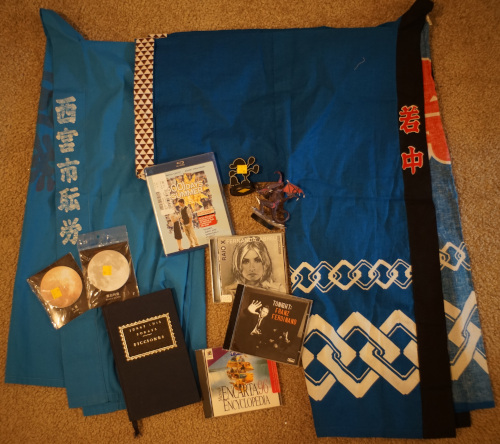

Big shout out to Vega for the completion of Vallant, the arrival of the Anpan-san, and Justinian's birthday! So many things are going on over there! Check it out!
I hope you all had a safe and exciting 4th of July! I got to see a house on fire and Ryan almost got hit by a firework set off by a single mom. Does anyone else celebrate another country's independence day or just us?? Americans are definitely partying on Cinco de Mayo!!

I had the joy of restringing my boys the other day. I ordered 10m of 4mm elastic and went to town. Veronie went fast and fine, Liam gave me massive trouble, Rio wasn't as hard as expected, Cheby had the small pain of the one touch system. Next time, I think I will order a string puller tool...
Liam's one touch system, plus KIPS, plus me trying to get his arms very tight made for a bad time!! My hands really hurt after him!! I had to resort to ribbon instead of just wire for the first time ever.
I ended up with 15.6 GB and over 2 hours of uninteresting footage. Maybe someone will watch it? I wouldn't. Watching me struggle hard to get Liam back together could theoretically be entertaining if that's your thing.
I ended up with 134cm of elastic left and a few dolls that should have had their legs done tighter. I just ordered some more KIPS (not from Volks) so maybe I'll tighten their legs when those show up.
More funky Brazilian beats
Even the cashier thought this was scary!